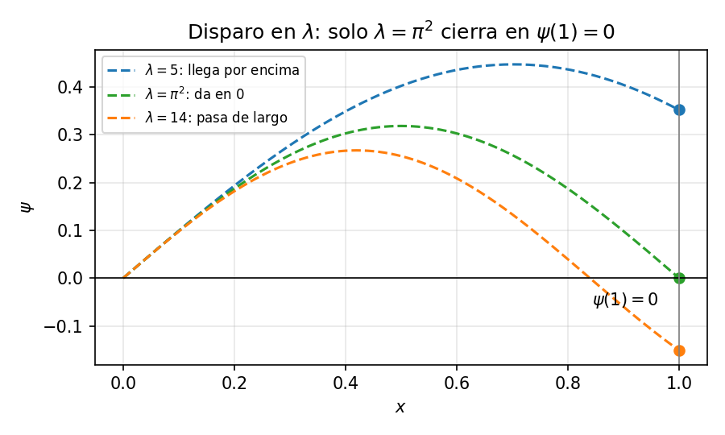
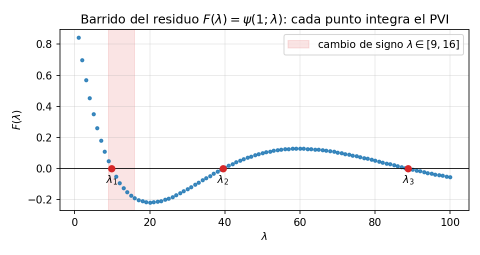

En el PVF las condiciones fijaban valores concretos en los bordes (\(y(a)=\alpha\), \(y(b)=\beta\)) y quedaba una sola solución, que el disparo hallaba ajustando la pendiente \(s\). Un problema de autovalores cambia las reglas en dos aspectos: la EDO trae un parámetro libre \(\lambda\), y las condiciones de borde son homogéneas, es decir, piden que la solución valga cero en los extremos, sin fijar ningún valor (\(\gamma=0\); véase condiciones de contorno). Por ejemplo,
\[y'' + \lambda y = 0, \qquad y(a)=y(b)=0.\]
La función \(y\equiv0\) satisface el problema para cualquier \(\lambda\). La pregunta útil es otra: ¿para qué valores de \(\lambda\) existe una solución no nula? Esos valores son los autovalores y las soluciones asociadas, las autofunciones.
¿Por qué aparecen valores aislados y no un continuo? Piensa en una cuerda de guitarra clavada en sus dos extremos. \(\lambda\) fija la longitud de onda con que oscila (más \(\lambda\), ondas más cortas). La cuerda vibra libremente, pero los dos clavos la fijan y la obligan a valer cero justo en \(x=a\) y en \(x=b\). Para casi cualquier \(\lambda\) la onda llega al segundo clavo a media altura y no se puede sujetar. Solo encajan las longitudes de onda en las que cabe un número entero de semiondas entre los extremos. Estos son el modo fundamental (media onda), el siguiente (una onda entera), y así sucesivamente. Esos pocos \(\lambda\) que «afinan» son los autovalores. Esta es la misma razón por la que una cuerda suena en armónicos y no en cualquier tono.
Las condiciones de contorno seleccionan así modos discretos de vibración, difusión o energía.
En PVF el disparo ajustaba la pendiente inicial \(s\) hasta que la trayectoria cumpliera el dato del otro extremo. Aquí la EDO ya trae un parámetro \(\lambda\), y son las condiciones homogéneas las que deben «cerrar» solas:
| PVF con disparo | Problema de autovalores | |
|---|---|---|
| Incógnita a ajustar | pendiente \(s=y'(a)\) | parámetro \(\lambda\) |
| Condición en \(x=b\) | \(y(b)=\beta\) (dato) | \(y(b)=0\) (homogénea) |
| Residuo | \(F(s)=y(b;s)-\beta\) | \(F(\lambda)=y(b;\lambda)\) |
| ¿\(F\) lineal? | sí → bastan dos disparos | no → barrido + bisección |
| Raíces | una | infinitas: \(\lambda_1<\lambda_2<\cdots\) |
| Amplitud | fijada por los datos | libre → \(y'(a)=1\) + normalizar |
Si la raíz es simple, el error de \(\lambda\) hereda el orden del integrador: con RK4 decrece como \(\mathcal{O}(h^4)\). La alternativa es el MDF de PVF: discretizar \(y''\) produce directamente un problema de autovalores para una matriz tridiagonal.
La ecuación de Schrödinger independiente del tiempo para una partícula confinada entre paredes impenetrables es
\[-\frac{\hbar^2}{2m}\,\psi''(x)=E\,\psi(x), \qquad \psi(0)=\psi(L)=0,\]
donde \(\psi\) es la función de onda y \(E\) la energía. Las condiciones expresan que la probabilidad se anula en las paredes.
Para concentrarnos en el método tomamos una caja de longitud \(L=1\) y agrupamos las constantes físicas en
\[\lambda=\frac{2mE}{\hbar^2}.\]
Así obtenemos directamente
\[\psi''+\lambda\psi=0, \qquad \psi(0)=\psi(1)=0.\]
Fijamos la escala provisional y resolvemos, para cada \(\lambda\),
\[\psi''=-\lambda\psi, \qquad \psi(0)=0, \qquad \psi'(0)=1.\]
El residuo es \(F(\lambda)=\psi(1;\lambda)\), la primera componente \(u_1\) del sistema de primer orden de PVF: si la trayectoria llega a cero sobre la pared derecha, \(\lambda\) es un autovalor.

Sin conocer solución cerrada, el procedimiento integra el PVI para una sucesión de valores de \(\lambda\) y observa el signo de \(F\):
| \(\lambda\) | \(F(\lambda)\) |
|---|---|
| 1 | \(+0.8415\) |
| 4 | \(+0.4546\) |
| 9 | \(+0.0470\) |
| 16 | \(-0.1892\) |
El cambio de signo entre 9 y 16 encierra una raíz. Bisección o secante —evaluando \(F\) siempre mediante el integrador— refinan el intervalo hasta \(\lambda_1\approx9.8696\).

Al continuar el barrido aparecen las raíces sucesivas \(\lambda_2, \lambda_3, \dots\)
En este ejemplo particular el PVI admite solución exacta,
\[\psi(x;\lambda)=\frac{\sin(\sqrt{\lambda}\,x)}{\sqrt{\lambda}}, \qquad F(\lambda)=\frac{\sin(\sqrt{\lambda})}{\sqrt{\lambda}},\]
por lo que \(F(\lambda)=0\) cuando \(\sqrt{\lambda}=n\pi\): los autovalores exactos son \(\boxed{\lambda_n=n^2\pi^2}\), con \(n=1,2,3,\dots\) El barrido los reproduce:
| \(n\) | \(\lambda_n\) numérico | \(n^2\pi^2\) exacto | nodos interiores |
|---|---|---|---|
| 1 | 9.8696 | 9.8696 | 0 |
| 2 | 39.4784 | 39.4784 | 1 |
| 3 | 88.8264 | 88.8264 | 2 |
Nada del procedimiento usó la solución exacta: el mismo barrido funciona para \(-\psi''+V(x)\psi=E\psi\), donde en general no hay fórmula cerrada.
La condición \(\psi'(0)=1\) solo evitó la solución trivial. Para interpretar \(|\psi|^2\) como densidad de probabilidad se impone después
\[\int_0^L|\psi(x)|^2\,dx=1 \quad\Longrightarrow\quad \psi_n(x)=\sqrt{\frac{2}{L}}\sin\!\left(\frac{n\pi x}{L}\right).\]
Al restituir la longitud general \(L\), las energías son
\[E_n=\frac{n^2\pi^2\hbar^2}{2mL^2}.\]
La ecuación admite ondas para cualquier \(E>0\), pero la segunda pared exige que en \(x=L\) haya un nodo. Solo las longitudes de onda que «caben» exactamente en la caja satisfacen ambas paredes: la cuantización aparece al imponer las condiciones de contorno.
Comprueba tu comprensión. ¿Por qué fijar \(\psi'(0)=0\) produciría siempre la solución trivial? Continuando el barrido de la tabla (\(\lambda=1,4,9,16,\dots\)), ¿entre qué par de valores queda encerrada la raíz \(\lambda_2=4\pi^2\approx39.5\)?